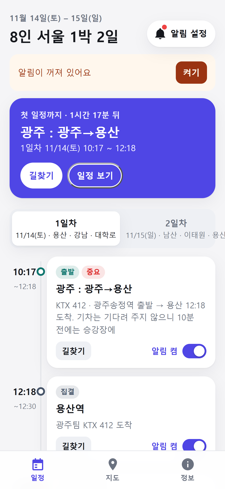
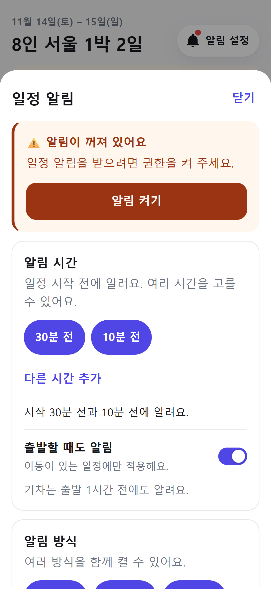

구글 경고가 뜨면 자세히
→ 무시하고 설치
. 카톡 안에서 안 받아지면 크롬으로 열어요.
정확한 시각 알림
이 꺼져 있다고 나오면 그것도 켜 주세요.
알림 설정
기본은 시작 30분·10분 전. 소리·진동·팝업을 고르고 알림 시험하기
로 10초 뒤 울리는지 확인해요.
길찾기
는 카카오맵으로 이어져요. 알림 켬
스위치로 그 일정만 끌 수 있어요.
지도
에서 전체 동선과 내 위치, 정보
에서 급할 때 연락처를 봐요.

첫 화면
알림 설정